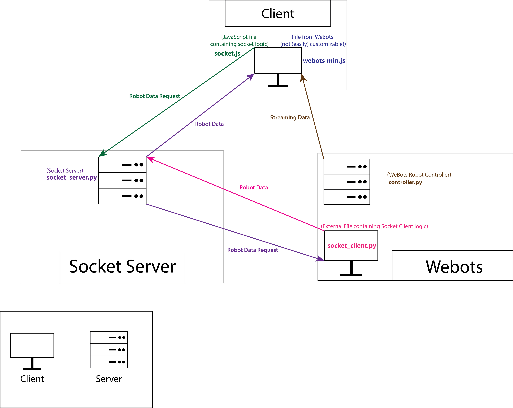

<html lang="en">

<head>
    <script src="./static/js/include.js"></script>
    <script>
        global_include();
    </script>
    </script>
    <title>Updates</title>
    <link rel="stylesheet" href="./static/css/UpdatesPage.css">
</head>

<body onload="decode_init()">
    <script>
        navbar_include('Updates');
    </script>
    <div class="container">
        <script>
            const COLOR_DISTINCT = "#f96d00";
            // [0] - Title
            // [1] - Date and Time (month dd, yyyy)
            // [2] - Description
            // HTML elements can be used
            const update_arr = [
                //
                ['Hello <del>World</del> Team',
                    'April 20, 2020',
                    `The project has begun, everyone has introduced themselves and the first steps have been discussed.<br>
                Let's do this.`],
                //
                //
                ['What are we working with here?',
                    'April 23, 2020',
                    `Every discipline (Mechanical Engineering, Electrical Engineering and ICT) installed the program <a class="href-link" href="https://cyberbotics.com/" target="_blank">WeBots</a>, 
                followed their tutorials and did some general research into it's capabilities.`],
                //
                //
                ['Program Requirements',
                    'April 24, 2020',
                    `Let's make a list of all the requirements that have to be met to get through the qualification.<br>
                We decided to base the requirements on the <a class="href-link" href="https://en.wikipedia.org/wiki/MoSCoW_method" target="_blank">MoSCoW</a> method.<br>
                The document can downloaded <a class="href-link" href="./downloads/Programma van Eisen.docx" target="_black">here</a>.`],
                //
                // TODO: Link to Wireframes
                // Some images of the wireframes would be nice too
                ['Website Design',
                    'April 30, 2020',
                    `The ICT discipline decided get working on the website as soon as possible, one student made some wireframes to kick-start the process.`],
                //
                // TODO: Link to Robot Design
                // Some images of the sketches would be nice too
                ['Robot Design',
                    'May 04, 2020',
                    `Mechanical Engineering got to work on the design of the robots by drawing sketches, these sketches had to be realistic and fit the tasks the Robot would have to execute for the qualification.`],
                //
                //
                ['So how are we going to run this website?',
                    'May 07, 2020',
                    `Two ICT students decided to discuss on how to host the website you are on now.
                <ul>
                    <li>Web Application? We'd need a stand-alone server anyways to host WeBots</li>
                    <li>Static Website? Any socket connections (e.g. stream) would only require client-side JavaScript</li>
                </ul>
                <p>
                    We decided to keep it as a webapplication for now (just incase we'd need a database or mail-server).<br>
                    This webapplication would run on <a class="href-link" href="https://www.python.org/" target="_blank">Python</a> (<a class="href-link" href="https://flask.palletsprojects.com/en/1.1.x/" target="_blank">Flask</a>), have <a class="href-link" href="https://www.mongodb.com/" target="_blank">mongoDB</a> as back-end database (since we wanted to try something new) and would be hosted using <a class="href-link" href="https://httpd.apache.org/" target="_blank">Apache2</a> (with the <a class="href-link" href="https://wsgi.readthedocs.io/en/latest/what.html" target="_blank">WSGI</a> module to make it work with Python).
                </p>`],
                //
                //
                ['We are Live',
                    'May 09, 2020',
                    `We got the streaming on the website to work, which was easier than expected.<br>
                    Though we are missing a way to get custom data from WeBots to the website (which was a requirement) so we might have to make our own socket for that to work.`],
                //
                //
                ['So here\'s the plan',
                    'May 10, 2020',
                    `To get custom data from WeBots to the website we'd have to use a socket, after some experimenting we found at least one succesful way to get it to work.<br>
                    This design would require the server to run a seperate Socket Listener (server) and WeBots stream (client) and have WeBots periodically send data over to the Socket Listener which would then broadcast it to all it's connected clients (visitors of website and WeBots simulation).<br>
                    It'd be best to have WeBots send this data directly to it's clients but until we get that to work we can use this implementation.<br><br>
                    `],
                //
                //
                ['Audio? I thought we were doing Vision',
                    'May 11, 2020',
                    `Yes apparently the Vision part of the project also requires Audio analysis, this we have to figure out on our own (with the help libraries and tutorials of course).<br>
                    The goal of the Audio analysis part is to detect music, it's bpm and ultimately to make the robot dance to it.`],
                //
                // TODO: Link to Robot model(s)
                // Some images of the wheels would be nice too
                ['<del>Re</del>inventing the wheel',
                    'May 12, 2020',
                    `The students of Mechanical Engineering modelled some wheels using <a class="href-link" href="https://www.solidworks.com/" target="_blank">SolidWorks</a> for the robot to use.`],
                //
                //
                ['<span style="color: cyan;">C</span><span style="color: white;">O</span><span style="color: yellow;">L</span><span style="color: orange;">O</span><span style="color: red;">R</span> Recognition',
                    'May 19, 2020',
                    `The robot had to distinguish temperature of water using it's color, that's how that works right?<br>
                    A student shared his demo regarding this subject;<br>
                    <span style="color: cyan">cyan</span>/<span style="color: white">white</span> \xa0\xa0\xa0\xa0\xa0\xa0\xa0 <span style="color: white; text-shadow: 0 0 10px cyan;">cold</span><br>
                    <span style="color: white">white</span>/<span style="color: yellow">yellow</span> \xa0\xa0\xa0\xa0\xa0 <span style="color: yellow; text-shadow: 0 0 10px white;">lukewarm</span><br>
                    <span style="color: yellow">yellow</span>/<span style="color: orange">orange</span> \xa0\xa0\xa0<span style="color: orange; text-shadow: 0 0 10px yellow;">warm</span><br>
                    <span style="color: orange">orange</span>/<span style="color: red">red</span> \xa0\xa0\xa0\xa0\xa0\xa0\xa0 <span style="color: red; text-shadow: 0 0 10px orange;">hot</span><br><br>
                    `],
            ];
            update_arr.reverse();
            document.write('<!-- JavaScript Generated -->')
            update_arr.forEach(update => {
                document.write(`
                <h1>${update[0]}</h1>
                <span class="decode" limit="5" speed="10" delay="0">${update[1]}</span>
                <p>${update[2]}</p>
                <br><br><br>
                `);
            });
        </script>
    </div>
</body>

</html>